欢迎来到大连理工大学
入学后生活指南：学校地理位置、周边餐饮娱乐与交通出行路线规划，以及各大大学生学科竞赛信息与办赛位置，助你快速融入校园生活。
学习规划
书院选择与专业选择：四大拔尖创新书院、各学部本科专业一览。
规划学习方向 →学校地理位置
一校两地三区：凌水主校区、开发区校区、盘锦校区的精确坐标与高德地图定位。
查看校区位置 →周边生活与路线规划
各校区周边餐饮、购物娱乐、交通出行场所，步行/公交路线规划与高德导航。
查看周边路线 →大学生学科竞赛
挑战杯、数学建模、ACM-ICPC 等七大竞赛信息、办赛位置与官网直达。
查看竞赛信息 →大工校风一览
校园活动 · 学术竞赛 · 青春风采
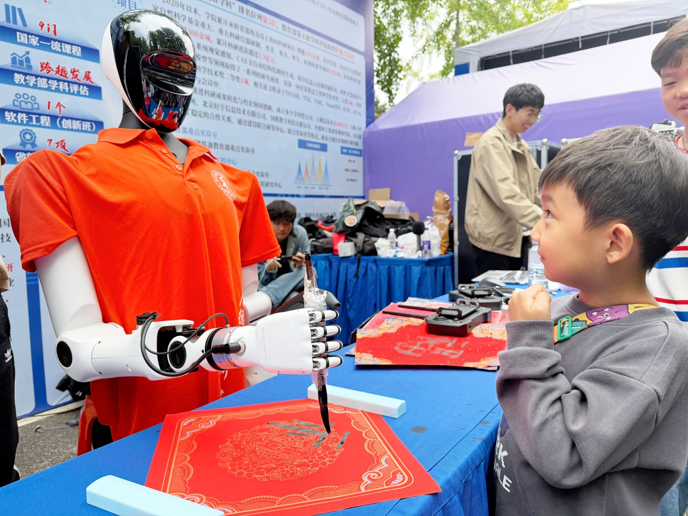
校园文化节嘉年华
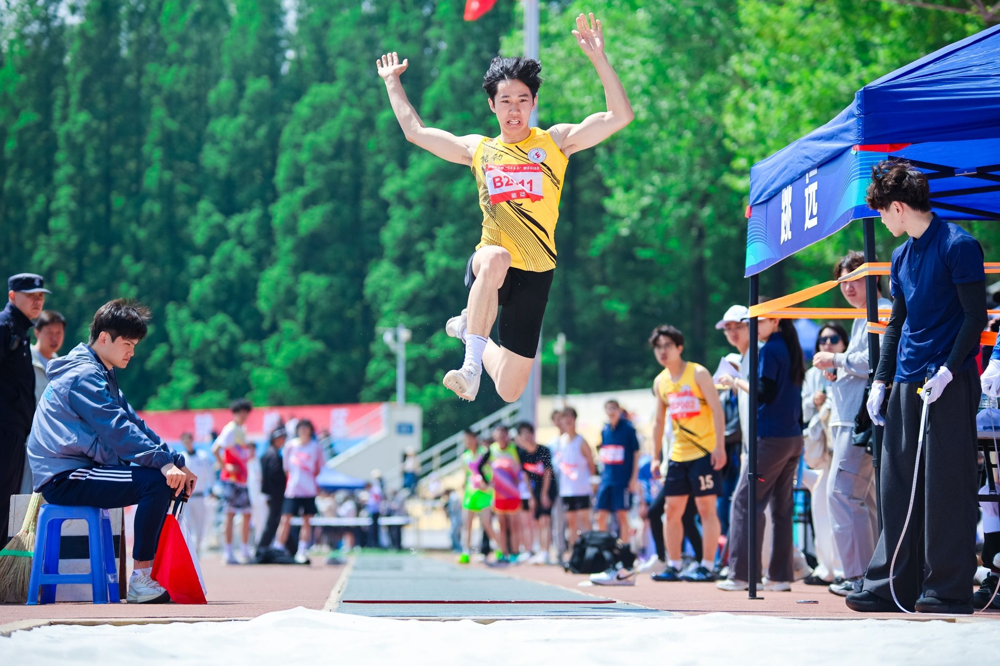
刘长春杯田径运动会
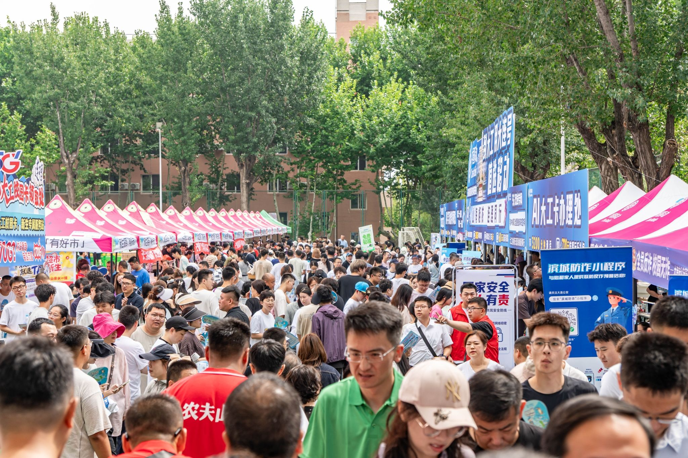
迎新季 · 新大工人
春满校园科创实践
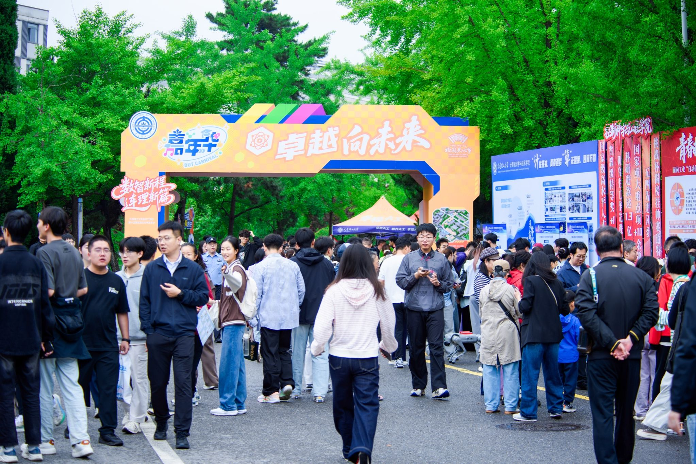
社团展示互动
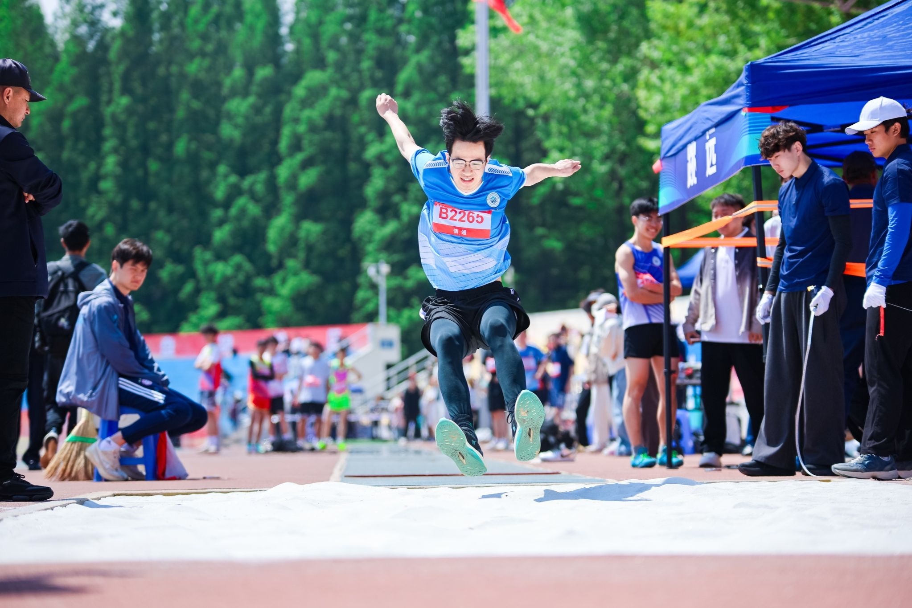
田径赛场风采
迎新报到现场
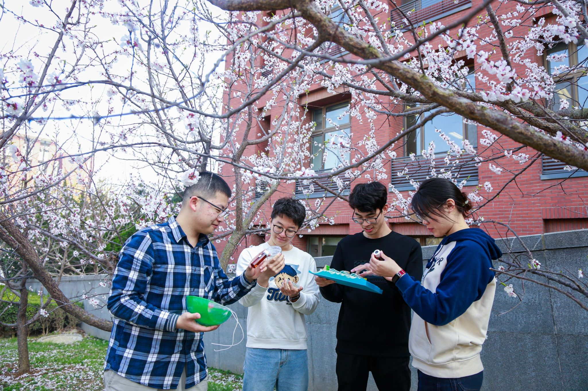
实验室科研日常
学习规划
书院 · 专业选择 · 为你的学业方向定锚
书院选择
大连理工大学拔尖创新人才培养书院
选择书院
专业选择
按学部 / 学院分类的本科专业
选择专业
学习规划助手
基于书院与专业 · 智能问答 · 未来课程规划
学习规划助手
面向大学学习的问答智能体 · 自动规划未来课程
在线
试试问
1
智能体根据你选择的书院与专业作答 · 仅供学习参考
学校地理位置
一校两地三区 · 点击查看高德地图
校区实时天气
选择校区
周边生活与路线规划
出发校区
从大连凌水主校区出发 · 步行/公交路线
大学生学科竞赛
办赛位置 · 官网直达 · 高德地图标注
本科阶段参加学术竞赛的意义与价值
学科竞赛是本科生将课堂理论转化为实践能力的重要平台。参加"挑战杯"、数学建模、ACM-ICPC 等高水平竞赛，能够锻炼创新思维、团队协作与问题解决能力，深化对专业知识的理解与应用；获奖经历更是保研推免、评奖评优、求职简历的有力加分项，也是结识志同道合伙伴、接触前沿课题与行业导师的宝贵契机。以赛促学、以赛促研，在竞赛中成长，是本科阶段值得投入的重要选择。
职业及未来规划
人生目标管理 · 从 SMART 开始，把「想成为什么」落成可执行的一步
SMART 原则是目标管理里最经典、也最好用的一套自检框架：一个能真正被执行的目标，需要同时满足
具体、可衡量、可达成、相关联、有时限五个条件。它最早由管理学学者乔治·多兰（George T. Doran）在 1981 年提出，
最初用于企业目标设定，后来被广泛应用于个人成长、学业规划与职业发展。
对本科生尤其有用——大一到大四最容易出现的状况不是"不努力"，而是"努力得很模糊"：想变优秀、想找好工作、想提升能力，
但说不清做到什么程度算做到、什么时候算做完。SMART 的作用，就是把这些愿望翻译成可执行的一句话。
一句话自检：
我要在 ［T 时间］ 前，完成 ［S 具体某件事］，用 ［M 可量化判据］ 衡量它是否完成；
这件事对我的 ［R 长期方向］ 有意义，并且以我现在的条件 ［A 做得到］。
S
具体
Specific
目标要指向一件明确的事，而不是一个笼统方向。说清楚到底做什么、涉及哪些方面、服务谁。
✗ 我要提升自己
✓ 本学期高等数学（上）期末达到 90 分，并整理完一本错题集
✓ 本学期高等数学（上）期末达到 90 分，并整理完一本错题集
M
可衡量
Measurable
要有能计数的判据，能回答"做到什么程度算完成"，方便中途自检进度而不是凭感觉。
✗ 多读点书
✓ 每月读完 2 本专业相关书籍，各写 300 字读书笔记
✓ 每月读完 2 本专业相关书籍，各写 300 字读书笔记
A
可达成
Achievable
结合自身基础、时间与资源，做到"跳一跳够得着"。太容易没有成长，太难只会半途而废。
✗ 零基础一学期进 ACM 校队
✓ 本学期完成 100 道算法入门题，参加一次校级程序设计竞赛
✓ 本学期完成 100 道算法入门题，参加一次校级程序设计竞赛
R
相关联
Relevant
和你的长期方向、所学专业、真实价值取向挂钩，避免为了努力而努力、为了考证而考证。
✗ 跟风去考一堆证书
✓ 围绕"智能制造"方向，考取 CAD 二级证书并完成一次相关课程设计
✓ 围绕"智能制造"方向，考取 CAD 二级证书并完成一次相关课程设计
T
有时限
Time-bound
给出明确的截止点与阶段检查点，把"无限期的愿望"压缩成排得进日历的具体日程。
✗ 有空再准备实习
✓ 11 月 30 日前完成简历初稿，12 月 15 日前投递 3 家目标企业
✓ 11 月 30 日前完成简历初稿，12 月 15 日前投递 3 家目标企业
图示：模糊愿望（左）经 SMART 五维拆解后，沿具体 → 可衡量 → 可达成 → 相关联 → 有时限逐级上升，最终抵达可检查、可完成的明确目标。
你是哪一种性格类型？MBTI 四维度
从精力来源（E/I）、信息获取（S/N）、决策方式（T/F）、生活态度（J/P）四个维度出发，用 24 道校园与求职情境题，帮你把"我大概是个什么样的人"说得更清楚一点，并给出匹配的职业方向参考。
凭第一直觉选，别纠结
—
—
说明：本测评以 MBTI 四维度框架为参考设计，用于自我探索与职业方向启发，结果仅反映答题时的状态，不构成任何专业心理测评或就业建议。
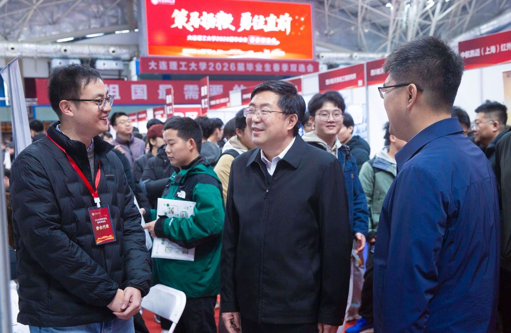
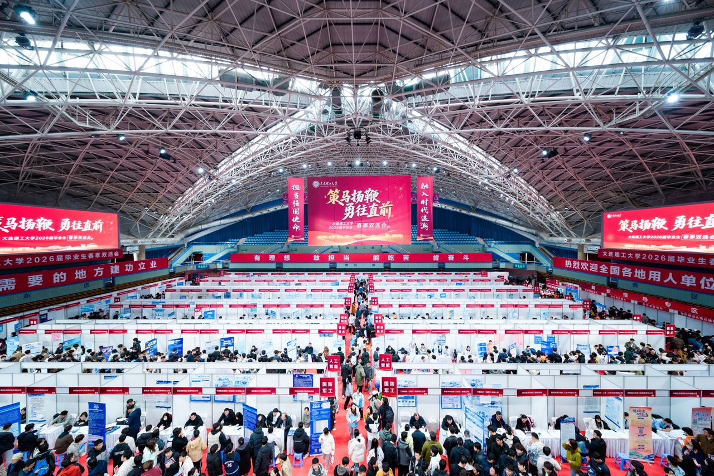
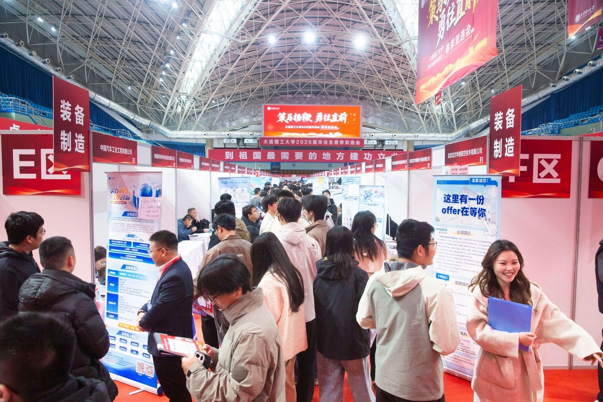
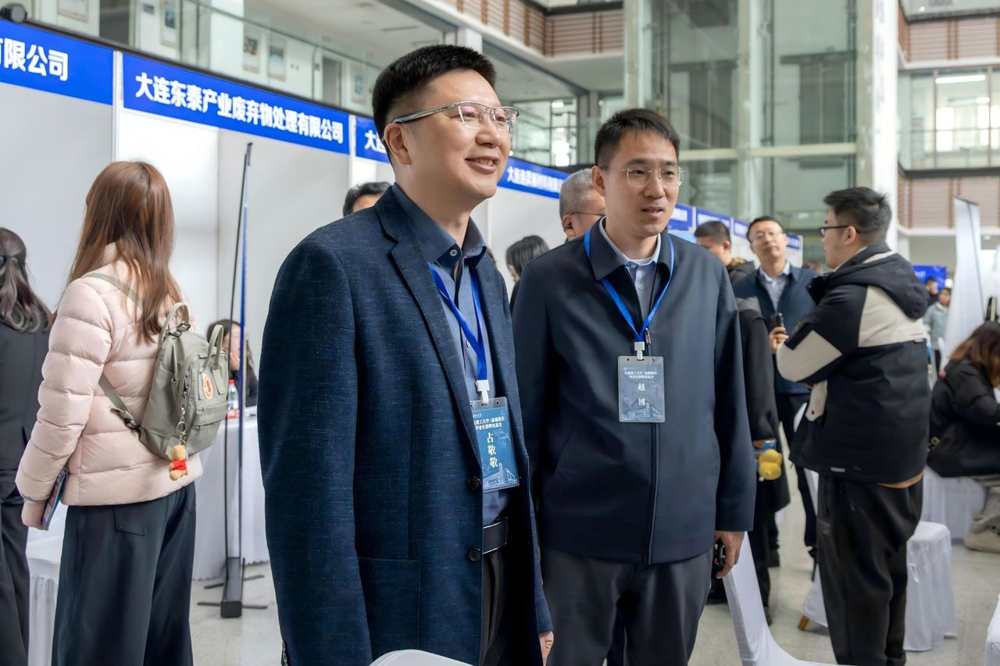
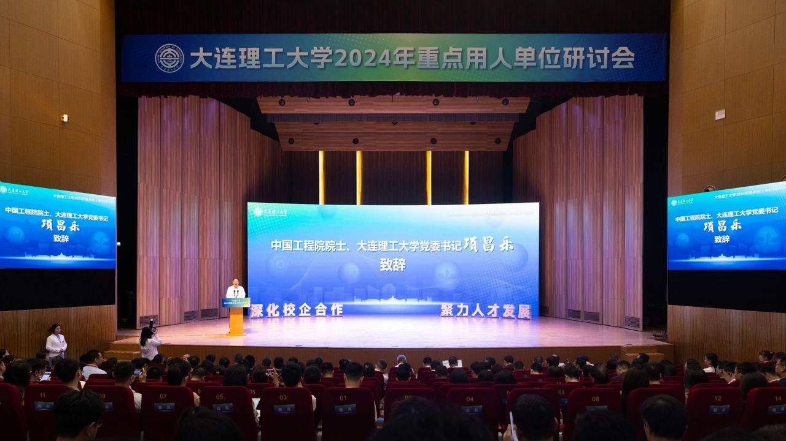
图片来源：大连理工大学新闻网、盘锦校区就业信息网；为便于加载已压缩至 1280px 宽。版权归大连理工大学及相关摄影作者所有。
更多分栏目（如「职业方向探索」「个人能力盘点」「大学四年时间轴」「求职与升学路径」）将在后续补充
大连理工大学 校园生活助手路线与位置数据由高德地图提供